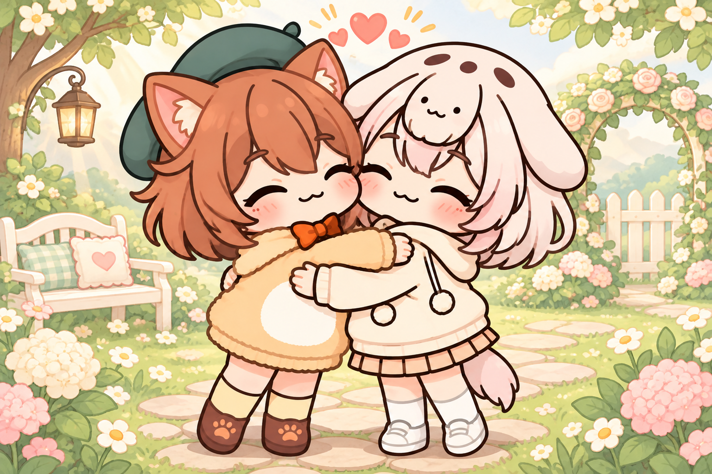

RIPO & MANDAMON · FERTILITY LAB
OPERATION 05:00 난자 보호 작전
난자
서바이버즈리포짱의 자궁을 지키는 5분.
인공수정 실험 중 정액 샘플이 뒤바뀌었다!
온조롱이의 정자들이 난자에 접근하는 상황.
남표니의 정자가 도착할 때까지 수정 방어선을 지켜라.
STORY PATH 수정에서 임신과 출산까지
01 인공수정02 난자 방어03 수정 성공04 임신·출산
WASD / 방향키 이동 · 모바일 드래그
P / ESC 일시정지 · 소리와 스킬 도감은 일시정지 메뉴

FERTILITY CHRONICLES / 01작은 난자에서 시작되는 큰 이야기.
RIPO LAB · THE BEGINNING OF A NEW STORY FERTILIZATION → PREGNANCY → BIRTH